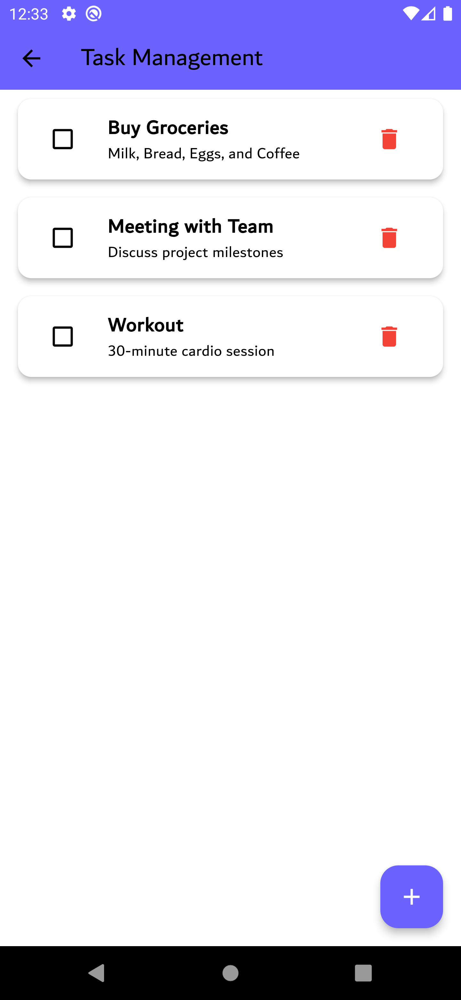
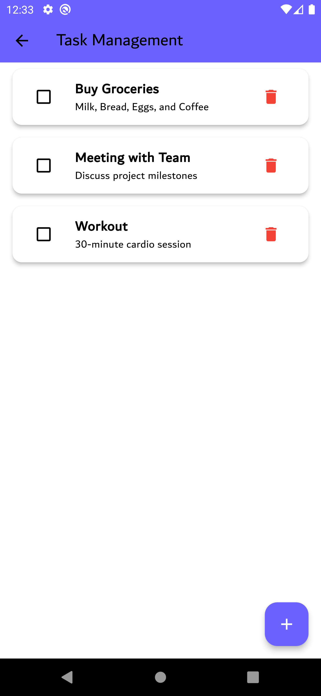

Task Manager
A Flutter-based task management app with a clean UI that allows users to add, complete, and delete daily tasks.
Project Overview
Task Management is a simple yet powerful mobile application designed to help users organize their daily tasks effectively. Built using Flutter, the app features a modern, clean interface and a smooth user experience.
Key Features
- Welcome Screen with a clean and attractive illustration introducing the app.
- Task List Screen that allows users to: Mark tasks as completed ✅. Delete tasks they no longer need üóëÔ∏è.
- Add New Task functionality using a popup dialog that includes:A field for the task title.A field for the task description.
- Interactive UI with subtle animations and responsive design.
App Screenshots
 
